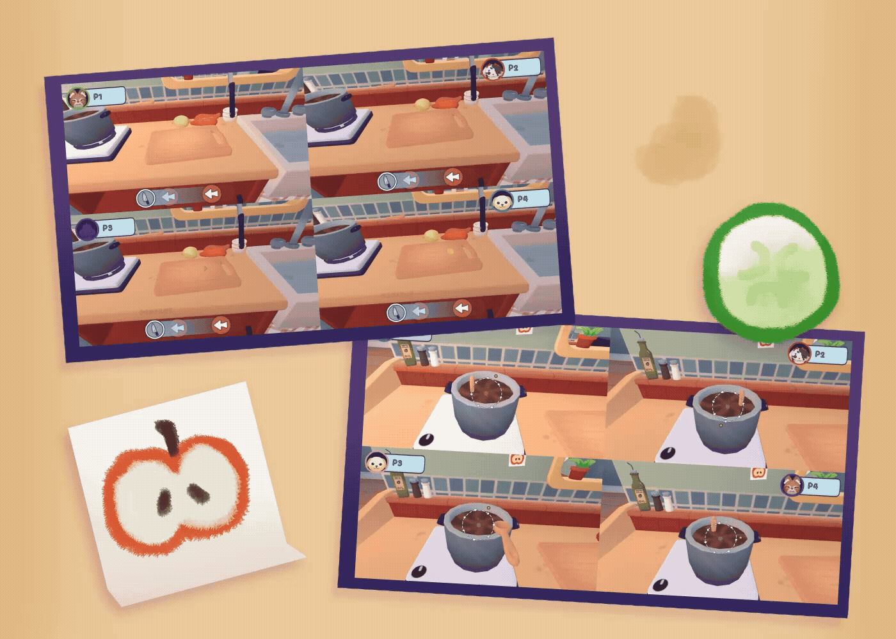
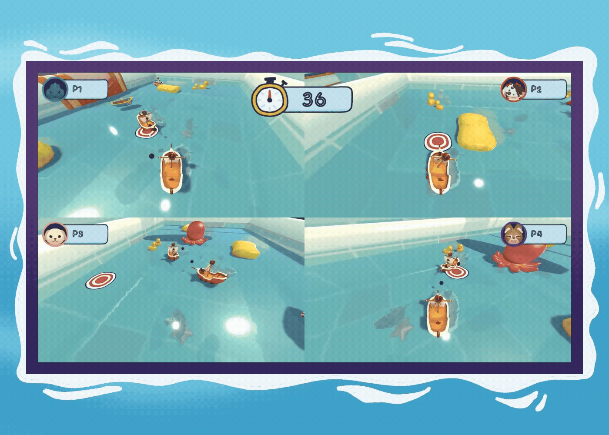
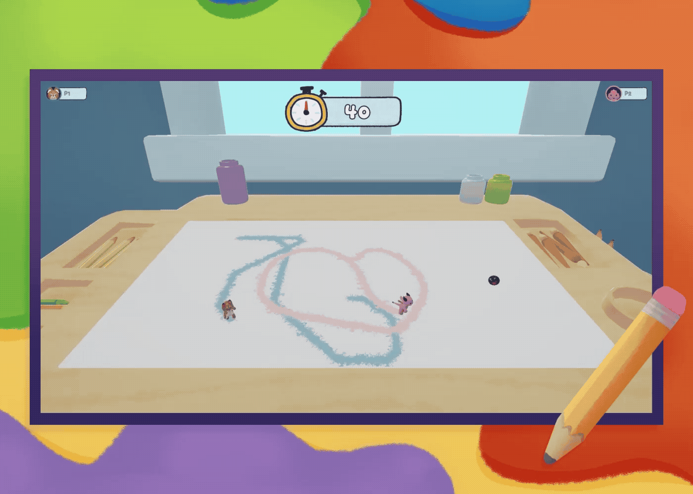
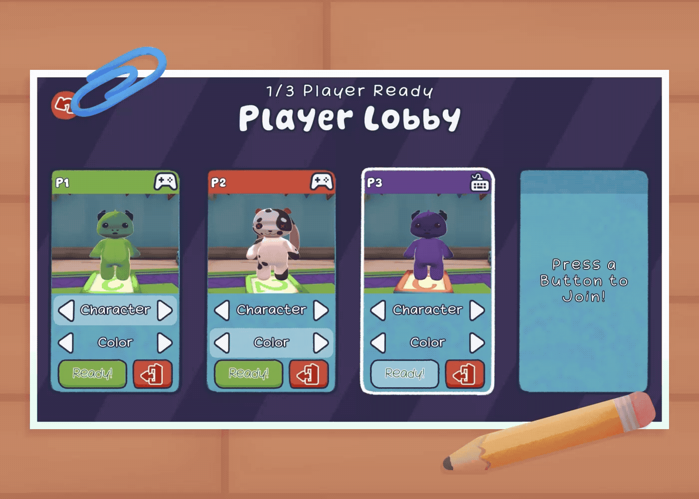
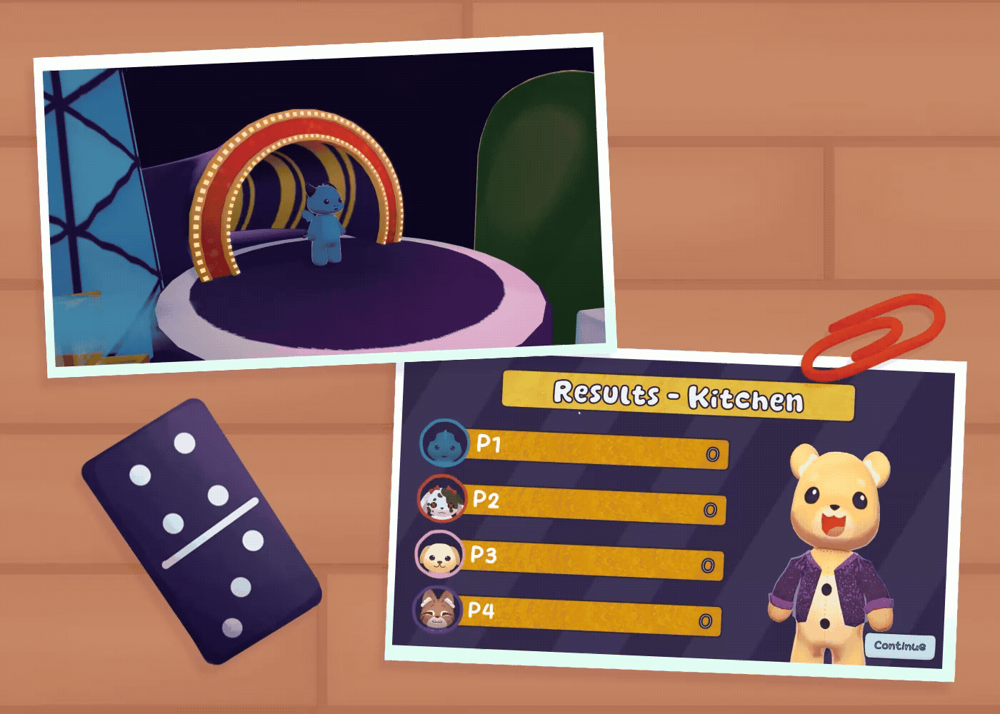

Cooking Chaos
Gather, wash, chop, and cook ingredients through a multiphase minigame.
A toy-themed local multiplayer party game where 2-4 players compete in cooking, boat combat, and painting minigames.
In a two-person team, I developed the gameplay systems and the shared framework connecting player input, UI, cameras, and game flow.
Each minigame has its own mechanics and camera needs, supported by the same player setup and game flow.

Gather, wash, chop, and cook ingredients through a multiphase minigame.

Maneuver your boat and fire cannons to outlast the other players.

Cover as much of the grid as possible to compete for board control.
I built the gameplay and multiplayer systems, then integrated the art and UI into Unity.
Explore the gameplay and systems in action, or watch the nine-video playlist for a closer look.

Each player selects their character and color through their own lobby card.
The cooking minigame moves between gameplay phases with sequence-based camera rigs.

Results connect each round to the wider minigame playlist and session flow.
PlayerInputManager handles dynamic joining. Per-player MultiplayerEventSystems give each lobby card its own controls; shared menus use a global EventSystem.
Different camera setups support each minigame. I integrated per-player UI and visibility so interfaces appear in the correct split-screen view.
A persistent Boot scene and GameFlowController coordinate additive minigame loading, sequencing, results, and returning to the lobby.